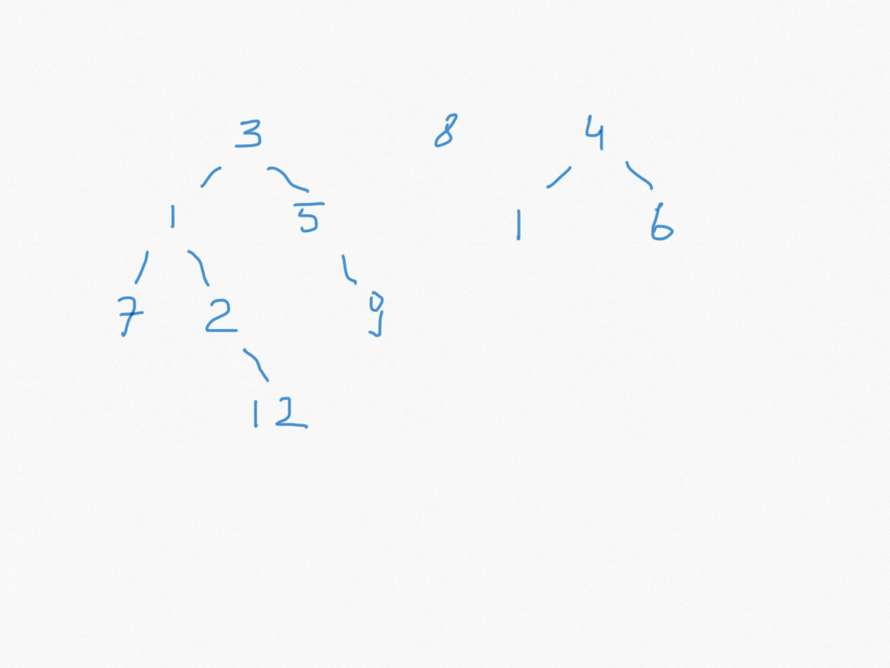
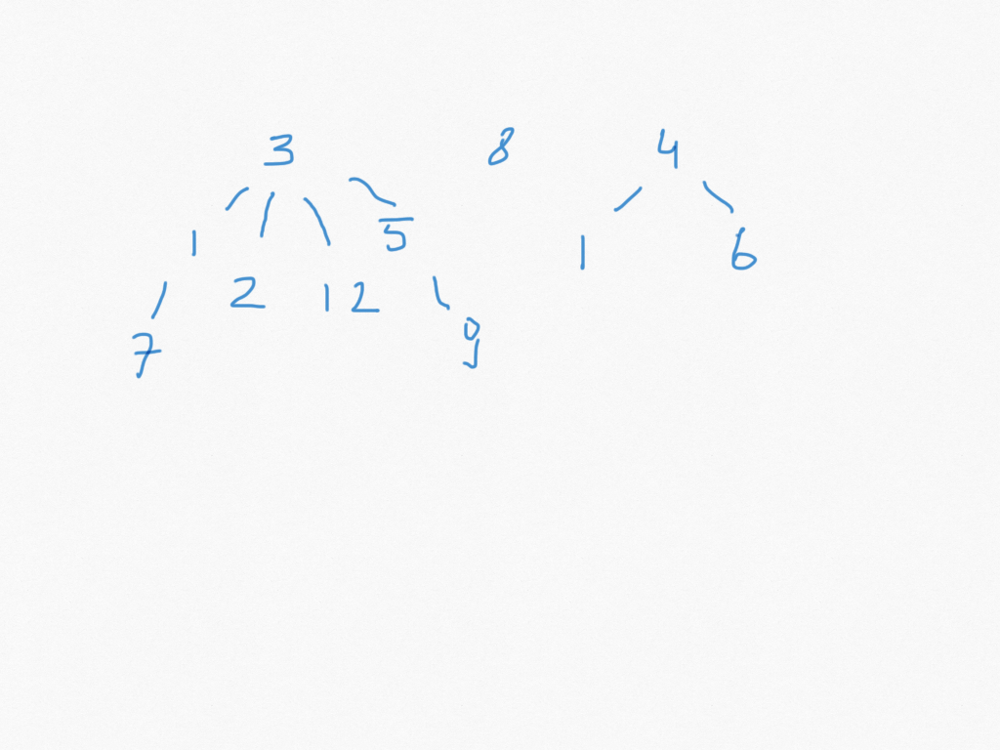

class: center, title-slide <br><br> ## CSCI-UA 480: APS ## Algorithmic Problem Solving <br/><br/><br/><br/><br/><br/><br/> ## Disjoint Set / Union-Find Data Structures .author[ Instructor: Joanna Klukowska <br> ] .license[ Copyright 2020 Joanna Klukowska. Unless noted otherwise all content is released under a <br> [Creative Commons Attribution-ShareAlike 4.0 International License](https://creativecommons.org/licenses/by-sa/4.0/).<br> Background image by Stewart Weiss<br>] --- layout:true template: default name: section class: inverse, middle, center --- layout:true template: default name: challenge class: challenge --- layout:true template: default name: poll class: inverse, full-height, center, middle --- layout:true template: default name: breakout class: breakout --- layout:true template:default name:slide class: slide .bottom-left[© Joanna Klukowska. CC-BY-SA.] --- ## Friends There is a town with N citizens. It is known that some pairs of people are friends. According to the famous saying that “The friends of my friends are my friends, too” it follows that if A and B are friends and B and C are friends then A and C are friends, too. Your task is to count how many people there are in the largest group of friends. .small[ __Input__: The first line contains tho numbers N and M , where N is the number of people (1 <= N <= 30000) and M is the number of pairs of people (0 <= M <= 500000), which are known to be friends. Each of the following M lines consists of two integers A and B (1 <= A,B <= N , A != B) which describe that A and B are friends. There could be repetitions among the given pairs. __Output__: The size of the largest group of friends. ] .left-column2[ __Example__ ``` Input 3 2 1 2 2 3 Output 3 ``` ] .right-column2[ __Example__ ``` Input 10 11 1 2 3 1 3 4 5 4 3 5 4 6 5 2 2 1 7 1 9 10 8 9 Output 7 ``` ] --- ## Friends 2 There is a town with N citizens. It is known that some pairs of people are friends. According to the famous saying that “The friends of my friends are my friends, too” it follows that if A and B are friends and B and C are friends then A and C are friends, too. In this town there are town parties each weekend where citizens of the town get to make new friends. (No friendships are ever broken.) Your task is to count how many people there are in the largest group of friends at the end of each weekend. --- ## Disjoint Set / Union-Find - tracks a set of elements partitioned into disjoint subsets - disjoint? --- ## Disjoint Set / Union-Find - tracks a set of elements partitioned into disjoint subsets - disjoint? -- = non overlapping, no elements in common -- - amortized performance: near constant time (bound by inverse [Ackerman function](https://en.wikipedia.org/wiki/Ackermann_function)) for - `find(x)` - determine which set an element belongs to - `sameSet(x,y)` - determine if x and y belong to the same set - `union(x,y)` - merge two sets of which x and y are members - the above performance assumes - path compression - merging by rank --- ## Example .center[<img src="img/union_find_1.png" alt="union-find" width = "75%"/>] --- ## Example .center[<img src="img/union_find_2.png" alt="union-find" width = "75%"/>] union(0,1)<br> union(6,8) --- ## Example .center[<img src="img/union_find_3.png" alt="union-find" width = "75%"/>] union(4,6)<br> (uses merging by rank: the _tree_ with larger size becomes the root) --- ## Example .center[<img src="img/union_find_4.png" alt="union-find" width = "75%"/>] union(3,7)<br> union(2,9) <br> union(9,3) --- ## Example .center[<img src="img/union_find_5.png" alt="union-find" width = "75%"/>] find(7) <br> (uses path compression) --- ## Disjoint Set / Union-Find - each tree is one subset (in which all pairs of elements have some required property, ex. they are friends) - each tree's root is the representative of the subset (we often use the root as the _name_ for the subset) - merging two subsets is performed by merging their respective trees -- - stored as arrays in which elements are the indexes into the array - for an element `i` its parent element is `A[i]` - different convenstions to indicate the root: the simplests (not an efficient one) is that `A[i] = i` for the root --- ## Visualizations: - [USFCA visualization](https://www.cs.usfca.edu/~galles/visualization/DisjointSets.html) - [VisuAlgo](https://visualgo.net/en/ufds?slide=1) --- class:challenge <!--based on UVA 10583 Uniquitous Religions--> ## Challenge There are N students ( 2 <= N <= 10^5) on campus. Each student belongs to exactly one student club. We do not know what clubs the students belong to, but we do have information about pairs of students who belong to the same club. This information is presented in the form of pairs: (a,b) - this indicates that the students a and b belong to the same student club. We have P (1 <= P <= 10^5) such pairs. The pairs are not guaranteed to be unique. Find the number of student clubs on campus. __Example:__ n = 5, (so at most 5 clubs) list of pairs: ``` (1,2) (1,4) (3,5) (2,4) ``` -- __Answer__ There are two student clubs. --- ## Performance Improvement: ## Path Compression - performed during the `find` operations - when traversing the path from the node to its root, set the parent of each node along that path to be root `find(12)`  --- name:path_comp ## Performance Improvement: ## Path Compression - performed during the `find` operations - when traversing the path from the node to its root, set the parent of each node along that path to be the root (effectively shortening the paths) -- - `find()` without path compression: ``` // Input: The element 'i' whose set representative we want to find. // Output: The representative of the set containing 'i'. find(i): while parent[i] != i: i = parent[i] return i ``` --- template:path_comp - `find()` with path compression ``` // Input: The element 'i' whose set representative we want to find. // Output: The representative of the set containing 'i'. find(i): // If 'i' is the root, return it. if parent[i] == i: return i // Recursively find the root of the set. As the recursion unwinds, // set the parent of 'i' directly to the root. root = find(parent[i]) parent[i] = root return root ``` --- ## Performance Improvement: ## Merging by Rank - performed during the `union` operation - rank = upper bound on the depth of the tree (not exact, since the depth is affected by path compression and it would be too expensive to keep rank equal to the actual depth) stored in a separate array (initially all ranks for singleton sets are the same) - when merging two sets/trees, we point the root of the one with the lower rank to the root of the one with the higher rank --- ## Performance Improvement: ## Merging by Rank ``` // Input: Two elements 'i' and 'j' that we want to merge into a single set. // Assumes the existence of a find() function and a rank array. function union(i, j): // Find the representatives (roots) of the sets containing 'i' and 'j'. root_i = find(i) root_j = find(j) // If they are already in the same set, do nothing. if root_i == root_j: return // Attach the smaller-rank tree under the root of the higher-rank tree. if rank[root_i] < rank[root_j]: parent[root_i] = root_j else if rank[root_i] > rank[root_j]: parent[root_j] = root_i else: // If ranks are the same, make one the root and increment its rank. // It doesn't matter which one we choose. parent[root_j] = root_i rank[root_i] = rank[root_i] + 1 ``` -- Why don't we increment rank of `root_i` and `root_j` when they are not equal? --- ## Performance Improvement: ## Merging by Size - an alternative to merging by rank: uses the number of nodes instead of the approximate depth --- ## Performance Improvement: ## Merging by Rank/Size - Can we store the information about the rank/size without using an extra array? -- (For the rest of this discussion, we focus on size.) -- - Use the original array that stores the parent information. To indicate that an element is the root of the set, its value is set to -size. - this means that whenever we discover a negative value we know it is a root (no longer looking for A[i] == i relationship) - the absolute value of A[i] is the size --- ## Performance Improvement ``` -------------------------------------------------------------- -1 -1 -1 -1 -1 -1 -1 -1 -1 -1 -1 -1 -1 -1 -------------------------------------------------------------- 0 1 2 3 4 5 6 7 8 9 10 11 12 13 ``` -- union (3,7) ``` -------------------------------------------------------------- -1 -1 -1 -2 -1 -1 -1 3 -1 -1 -1 -1 -1 -1 -------------------------------------------------------------- 0 1 2 3 4 5 6 7 8 9 10 11 12 13 ``` -- union (2,5), union(5,12) ``` -------------------------------------------------------------- -1 -1 -3 -2 -1 2 -1 3 -1 -1 -1 -1 2 -1 -------------------------------------------------------------- 0 1 2 3 4 5 6 7 8 9 10 11 12 13 ``` --- class:challenge ## Challenge How will this array change after `union(2,3)` is executed? Draw the trees associated with these sets. ``` -------------------------------------------------------------- -1 -1 -3 -2 -1 2 -1 3 -1 -1 -1 -1 2 -1 -------------------------------------------------------------- 0 1 2 3 4 5 6 7 8 9 10 11 12 13 ``` --- class:challenge ## Challenge How will this array change after `union(7, 12)` is executed? Draw the trees associated with these sets. ``` -------------------------------------------------------------- -1 -1 -3 -2 -1 2 -1 3 -1 -1 -1 -1 2 -1 -------------------------------------------------------------- 0 1 2 3 4 5 6 7 8 9 10 11 12 13 ``` --- class:challenge ## Challenge How will this array change after the following three union operations are executed: `union(8,9)`, `union(10,11)`, `union(8,10)` (in that order)? Draw the trees associated with these sets. ``` -------------------------------------------------------------- -1 -1 -3 -2 -1 2 -1 3 -1 -1 -1 -1 2 -1 -------------------------------------------------------------- 0 1 2 3 4 5 6 7 8 9 10 11 12 13 ``` --- class:challenge ## Challenge: Allies and Enemies There are N countries ( 2 <= N <= 10^5). Any pair of countries are either allies or enemies. Instructions to be implemented: - `ally(x,y)`, x and y are allies - `enemy(x,y)`, x and y are enemies - `isAlly(x,y)`, queries about being allies - `isEnemy(x,y)`, queries about being enemies (if an instruction `ally` or `enemy` conflicts with existing information, it should be ignored and a conflict should be reported ) We have the following relations: - if `ally(x,y)` and `ally(y,z)` then `ally(x,z)` - if `ally(x,y)` and `enemy(y,z)` then `enemy(x,z)` - if `enemy(x,y)` and `ally(y,z)` then `enemy(x,z)` - if `enemy(x,y)` and `enemy(y,z)` then `ally(x,z)` --- ## Challenge: Allies and Enemies ## Example n = 5, (countries numbered 1 - 5) |instructions | response | |:---|:---| |`isAlly(1,2)` | false, no info yet | |`isEnemy(1,2)` | false, no info yet | |`ally(1,2)` | OK (i.e., no conflict) | |`ally(3,4)` | OK (i.e., no conflict) | |`enemy(1,2)` | conflict | |`enemy(1,4)` | OK (i.e., no conflict) | |`isEnemy(1,3)` | true | |`enemy(1,5)` | OK (i.e., no conflict) | |`isAlly(2,5)` | false | |`isAlly(3,5)` | true | |`enemy(4,5)` | conflict | --- ## Challenge: Allies and Enemies ## Solution Represent each country with two values: x and x' The required instructions can be now implemented using disjoint set as follows: - ally(x,y) - if sameSet(x,y'), then conflict - otherwise union(x,y) and union(x',y') - enemy(x,y) - if sameSet(x,y), then conflict - otherwise union(x,y') and union(x',y) - isAlly(x,y) - return sameSet(x,y) - isEnemy(x,y) - return sameSet(x,y') --- ## Challenge: Allies and Enemies ## Example Solution n = 5, (countries numbered 1 - 5) |instructions | response | disjoint set | |:---|:---|:---| | | | `/ 1 / 2 / 3 / 4 / 5 / 1'/ 2'/ 3'/ 4'/ 5'/ ` | |`isAlly(1,2)` | false, no info yet | `/-1 /-1 /-1 /-1 /-1 /-1 /-1 /-1 /-1 /-1 / ` | |`isEnemy(1,2)` | false, no info yet | `/-1 /-1 /-1 /-1 /-1 /-1 /-1 /-1 /-1 /-1 / ` | |`ally(1,2)` | OK (i.e., no conflict) | `/-2 / 1 /-1 /-1 /-1 /-2 / 1'/-1 /-1 /-1 / ` | |`ally(3,4)` | OK (i.e., no conflict) | `/-2 / 1 /-2 / 3 /-1 /-2 / 1'/-2 / 3'/-1 / ` | |`enemy(1,2)` | conflict | `/-2 / 1 /-2 / 3 /-1 /-2 / 1'/-2 / 3'/-1 / ` | |`enemy(1,4)` | OK (i.e., no conflict) | `/-4 / 1 / 1'/ 3 /-1 /-4 / 1'/ 1 / 3'/-1 / ` | |`isEnemy(1,3)` | true | `/-4 / 1 / 1'/ 3 /-1 /-4 / 1'/ 1 / 3'/-1 / ` | |`enemy(1,5)` | OK (i.e., no conflict) | `/-5 / 1 / 1'/ 3 / 1'/-5 / 1'/ 1 / 3'/ 1 / ` | |`isAlly(2,5)` | false | `/-5 / 1 / 1'/ 3 / 1'/-5 / 1'/ 1 / 3'/ 1 / ` | |`isAlly(4,5)` | true | `/-5 / 1 / 1'/ 1'/ 1'/-5 / 1'/ 1 / 3'/ 1 / ` *| |`enemy(4,5)` | conflict | `/-5 / 1 / 1'/ 1'/ 1'/-5 / 1'/ 1 / 3'/ 1 / `| <sup>*</sup> path compression --- ## Challenge: Build a Maze Given an NxN grid generate a random maze (i.e., start with a 2D grid with full separation; then remove some of the walls to join the cells on two sides of the wall). - we have a fixed start point and end point - there should be no cycles in the maze - every cell should be reachable from every other cell ``` -- -- -- -- -- -- S | | | | | | -- -- -- -- -- -- | | | | | | | -- -- -- -- -- -- | | | | | | | -- -- -- -- -- -- | | | | | | | -- -- -- -- -- -- | | | | | | | -- -- -- -- -- -- | | | | | | E -- -- -- -- -- -- ``` --- ## Challenge: Building a Maze __Algorithm__: - create a set of all internal walls - create a disjoint set of all cells (initially each cell is in its own set) - as long as there are more than one set of cells: - choose a wall at random from the wall-set - if the cells on each side of this wall are not in the same set, - erase the wall from the maze - union the two sets associated with the two cells --- ``` -- -- -- -- -- -- S | | | | | | -- -- -- -- -- -- | | | | | | | -- -- -- -- -- -- | | | | | | | -- -- -- -- -- -- | | | | | | | -- -- -- -- -- -- | | | | | | | -- -- -- -- -- -- | | | | | | E -- -- -- -- -- -- ``` --- ``` -- -- -- -- -- -- S | W | | | | -- -- -- -- -- -- | | | | | | | -- -- -- -- -- -- | | | | | | | -- -- -- -- -- -- | | | | | | | -- -- -- -- -- -- | | | | | | | -- -- -- -- -- -- | | | | | | E -- -- -- -- -- -- ``` --- ``` -- -- -- -- -- -- S | | | | | -- -- -- -- -- -- | | | | | | | -- -- -- -- -- -- | | | | | | | -- -- -- -- -- -- | | | | | | | -- -- -- -- -- -- | | | | | | | -- -- -- -- -- -- | | | | | | E -- -- -- -- -- -- ``` --- ``` -- -- -- -- -- -- S | | | | | -- -- -- -- -- -- | | | | W | | -- -- -- -- -- -- | | | | | | | -- -- -- -- -- -- | | | | | | | -- -- -- -- -- -- | | | | | | | -- -- -- -- -- -- | | | | | | E -- -- -- -- -- -- ``` --- ``` -- -- -- -- -- -- S | | | | | -- -- -- -- -- -- | | | | | | -- -- -- -- -- -- | | | | | | | -- -- -- -- -- -- | | | | | | | -- -- -- -- -- -- | | | | | | | -- -- -- -- -- -- | | | | | | E -- -- -- -- -- -- ``` --- ``` -- -- -- -- -- -- S | | | | | -- -- -- W -- -- | | | | | | -- -- -- -- -- -- | | | | | | | -- -- -- -- -- -- | | | | | | | -- -- -- -- -- -- | | | | | | | -- -- -- -- -- -- | | | | | | E -- -- -- -- -- -- ``` --- ``` -- -- -- -- -- -- S | | | | | -- -- -- -- -- | | | | | | -- -- -- -- -- -- | | | | | | | -- -- -- -- -- -- | | | | | | | -- -- -- -- -- -- | | | | | | | -- -- -- -- -- -- | | | | | | E -- -- -- -- -- -- ``` --- ``` -- -- -- -- -- -- S | | | | | -- -- -- W -- | | | | | | -- -- -- -- -- -- | | | | | | | -- -- -- -- -- -- | | | | | | | -- -- -- -- -- -- | | | | | | | -- -- -- -- -- -- | | | | | | E -- -- -- -- -- -- ``` --- ``` -- -- -- -- -- -- S | | | | | -- -- -- -- | | | | | | -- -- -- -- -- -- | | | | | | | -- -- -- -- -- -- | | | | | | | -- -- -- -- -- -- | | | | | | | -- -- -- -- -- -- | | | | | | E -- -- -- -- -- -- ``` --- ``` -- -- -- -- -- -- S | | W | | -- -- -- -- | | | | | | -- -- -- -- -- -- | | | | | | | -- -- -- -- -- -- | | | | | | | -- -- -- -- -- -- | | | | | | | -- -- -- -- -- -- | | | | | | E -- -- -- -- -- -- ``` --- ``` -- -- -- -- -- -- S | | | | | -- -- -- -- | | | | | | -- -- -- -- -- -- | | | | | | | -- -- -- -- -- -- | | | | | | | -- -- -- -- -- -- | | | | | | | -- -- -- -- -- -- | | | | | | E -- -- -- -- -- -- ``` --- ``` -- -- -- -- -- -- S | | | | | -- -- -- -- | | | | | | -- W -- -- -- -- | | | | | | | -- -- -- -- -- -- | | | | | | | -- -- -- -- -- -- | | | | | | | -- -- -- -- -- -- | | | | | | E -- -- -- -- -- -- ``` --- ``` -- -- -- -- -- -- S | | | | | -- -- -- -- | | | | | | -- -- -- -- -- | | | | | | | -- -- -- -- -- -- | | | | | | | -- -- -- -- -- -- | | | | | | | -- -- -- -- -- -- | | | | | | E -- -- -- -- -- -- ``` --- ``` -- -- -- -- -- -- S | | | | | -- -- -- -- | | | | | | -- -- -- -- -- | | | W | | | -- -- -- -- -- -- | | | | | | | -- -- -- -- -- -- | | | | | | | -- -- -- -- -- -- | | | | | | E -- -- -- -- -- -- ``` --- ``` -- -- -- -- -- -- S | | | | | -- -- -- -- | | | | | | -- -- -- -- -- | | | | | | -- -- -- -- -- -- | | | | | | | -- -- -- -- -- -- | | | | | | | -- -- -- -- -- -- | | | | | | E -- -- -- -- -- -- ``` --- ``` -- -- -- -- -- -- S | | | | | W -- -- -- | | | | | | -- -- -- -- -- | | | | | | -- -- -- -- -- -- | | | | | | | -- -- -- -- -- -- | | | | | | | -- -- -- -- -- -- | | | | | | E -- -- -- -- -- -- ``` --- ``` -- -- -- -- -- -- S | | | | | -- -- -- | | | | | | -- -- -- -- -- | | | | | | -- -- -- -- -- -- | | | | | | | -- -- -- -- -- -- | | | | | | | -- -- -- -- -- -- | | | | | | E -- -- -- -- -- -- ``` --- .largest[...] --- ## Challenge: Counting Islands The NxM grid of integers gives terrain elevation. Given a water level L, every cell with the height (=elevation) <= L is below the water. The islands are the cells above the water. An island is a group of 4-connected cells (connected by the sides, not corners). Determine the number of islands. .center[ <img src="img/islands1.PNG" alt="elevation map" width="375px"/> <img src="img/islands2.PNG" alt="elevation map" width="375px"/> L = 2, there are 2 islands] --- ## Challenge: Counting Islands The NxM grid of integers gives terrain elevation. Given a water level L, every cell with the height (=elevation) <= L is below the water. The islands are the cells above the water. An island is a group of 4-connected cells (connected by the sides, not corners). Determine the number of islands. .center[ <img src="img/islands1.PNG" alt="elevation map" width="375px"/> <img src="img/islands3.PNG" alt="elevation map" width="375px"/> L = 4, there are 4 islands] --- ## Challenge: Counting Islands The NxM grid of integers gives terrain elevation. Given a water level L, every cell with the height (=elevation) <= L is below the water. The islands are the cells above the water. An island is a group of 4-connected cells (connected by the sides, not corners). Determine the number of islands. .center[ <img src="img/islands1.PNG" alt="elevation map" width="375px"/> <img src="img/islands4.PNG" alt="elevation map" width="375px"/> L = 6, there is 1 island] --- ## Counting Islands __Solution 1__ Use O(N*M) algorithm that visits all the cells one by one. For each cell that is above the level of water find all the cells adjacent to it (DFS type search) and mark them as visited. For each discovered island increment the count of islands. ---- -- __Solution 2__ Use disjoint sets data structure. -- For each cell, look at the four adjacent neighbors. If they are above L union the two cells. The number of sets is the number of islands. -- Or is it? What about the "sets" associated with the cells with values <= L? ---- -- __Problem variation__ But, what if we need to provide the answer for "continuous" levels: - global warming -> waters are rising - after floding -> waters are slowly dropping --- ## Counting Islands Continuous This approach counts the islands for levels from largest (everything is under water) to smallest (everything is above water) - each cell is in its own set - for processing sort the cells from largest (highest elevation) to lowest - for level L0 (the highest level), go through all cells with values > L0 and union each of them with its four neighbors if that neighbor is also above L0; keep track of the number of islands - for level L1 (the next highest level), go through all the cells with values > L1 and <=L0, union each with its four neighbors if that neighbor is larger than L1; keep track of the number of islands - ... </optgroup>